Beste lezer,
Na een lange zomervakantie zit het luieren er weer op. De arbeid roept, de scholen zijn weer begonnen, en bij het oppakken van het "gewone leven" hoort ook weer de wekelijkse repetitie van orkest en/of steelband. Gelukkig weer oud, vertrouwd èn gezellig!
De eerste optredens zitten er inmiddels ook weer op, dus daarom ook weer de hoogste tijd voor een nieuw Tavenieuwsje. Hierin de verslagen van de activiteiten in september (waarvan zelfs eentje van een toeschouwer), de 2e hobby van een muzikant, de agenda en verjaardagen, en nog even onze jubilarissen op een rijtje.
We wensen jullie veel leesplezier. Mocht je zelf een (leuk) stukje willen schrijven over iets wat je meemaakt bij Tavenu, mail dat dan gerust naar tavenieuwsje@outlook.com
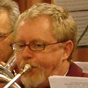
Eerlijk is eerlijk, ik ben een beetje allergisch voor de naam, alsof het per se gezellig moet worden. En om drie uur de voetjes van de vloer zag ik ook nog niet voor me. Het is wat jaartjes geleden dat we zondagmiddag disco hadden in een verduisterde “Future”. Maar een mens kan verrast worden hè? Het was heel gezellig, en de voetjes van de vloer bleek een salsa workshop. Super leuk!
Eerst werd Remon gehuldigd, een mooie speech van Koos, een speldje en een oorkonde. 40 jaar is niet niks!
Rinus werd ook gehuldigd, 50 jaar lid, en dat terwijl hij diverse stoppogingen heeft ondernomen. Gelukkig niet gelukt want nu konden we zijn wens inwilligen. Zingen in plaats van blazen. Erg leuk om te doen! En we kunnen Rinus niet missen, de repetities zouden wat saaier worden…
Al met al een goed verzorgde middag, leuk om iedereen weer te spreken na de vakantie (op de vakantiegangers na dan) en ook goed om elkaar wat langer te spreken dan tijdens de repetitie, wat überhaupt niet erg op prijs wordt gesteld.
Petje af voor de organisatoren. Een geslaagde middag, een super workshop en lekker eten toe. Bedankt, het was erg gezellig!
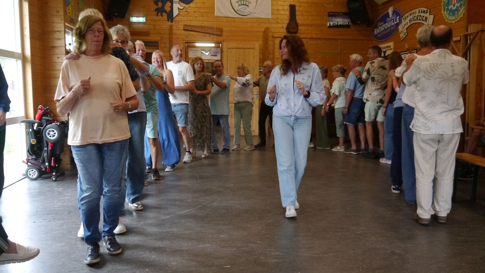
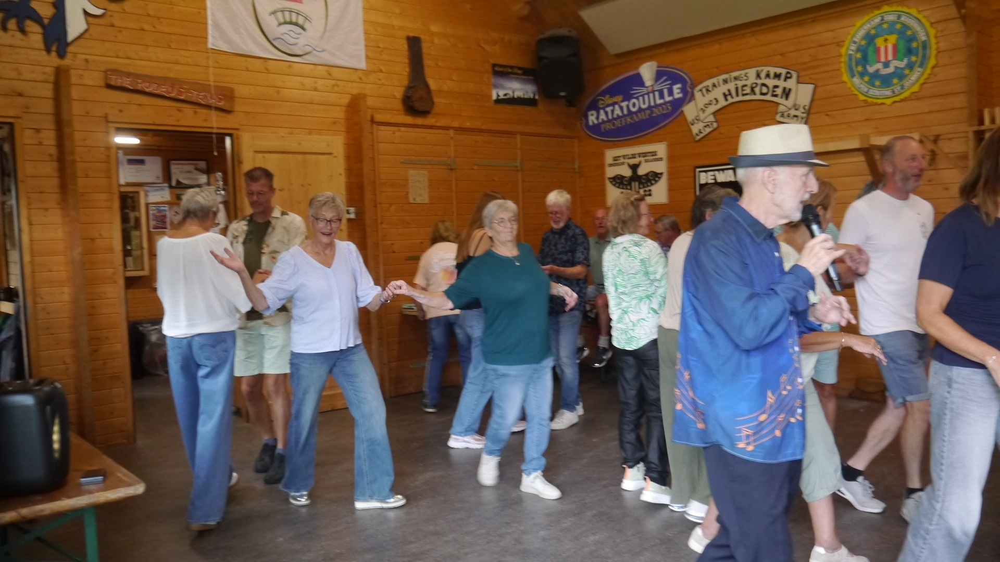
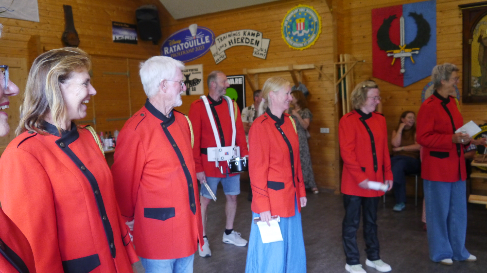
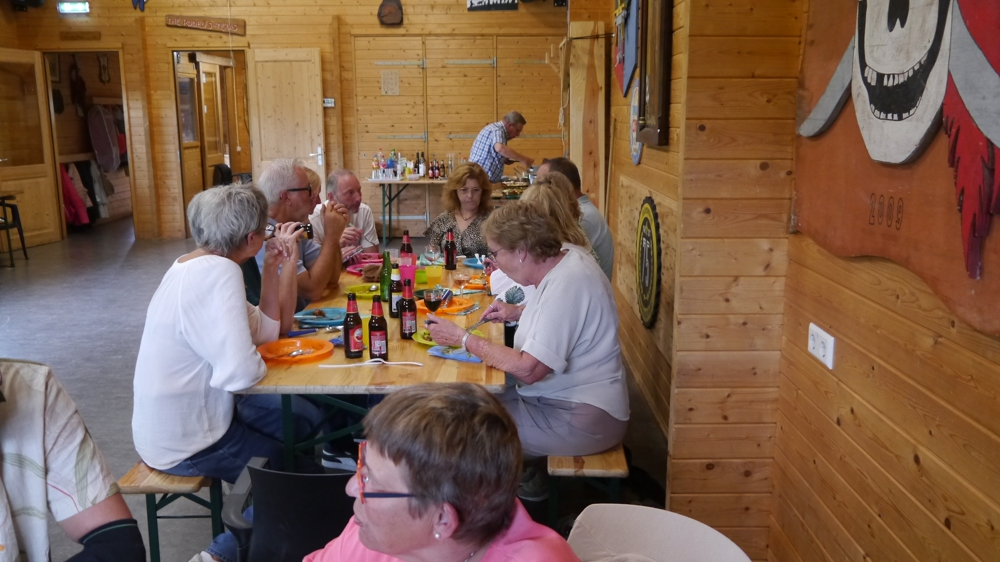
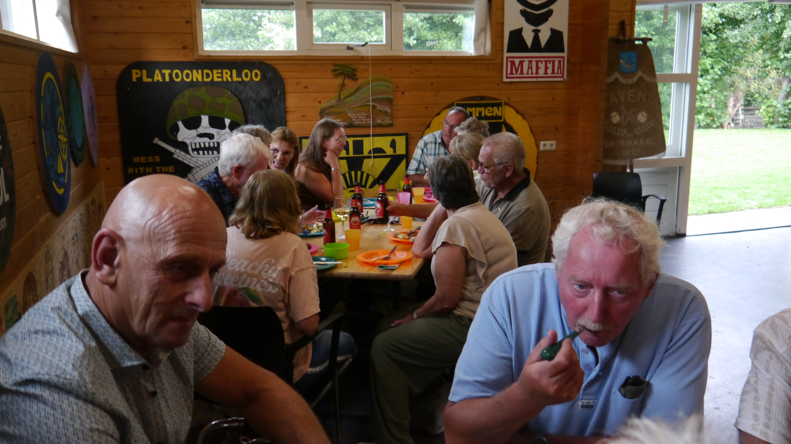
Op een mooie zonnige zondag 6 september waren wij (Tavenu) op weg naar de kerk in Nes aan de Amstel voor een verassingsconcertje t.b.v. een gezamenlijke kerkdienst van de parochies Aalsmeer, Kudelstaart, De Kwakel, Uithoorn en Nes aan de Amstel, wat in de buitenlucht plaatsvond.
We hebben koraal (nr.27) als eerste gespeeld.
Na afloop van de mis was er koffie en een verdere muzikale ondersteuning van ons, waarbij wij de nummers Gimme hope Jo’anna, Het Dorp, YMCA en Guus Meeuwis gespeeld hebben.
Het geheel werd erg op prijs gesteld door de kerkgemeenschap.
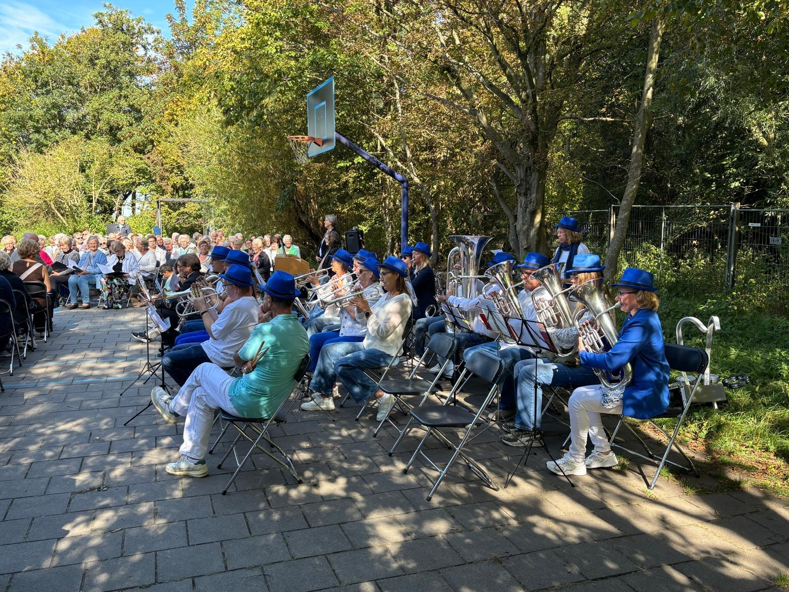
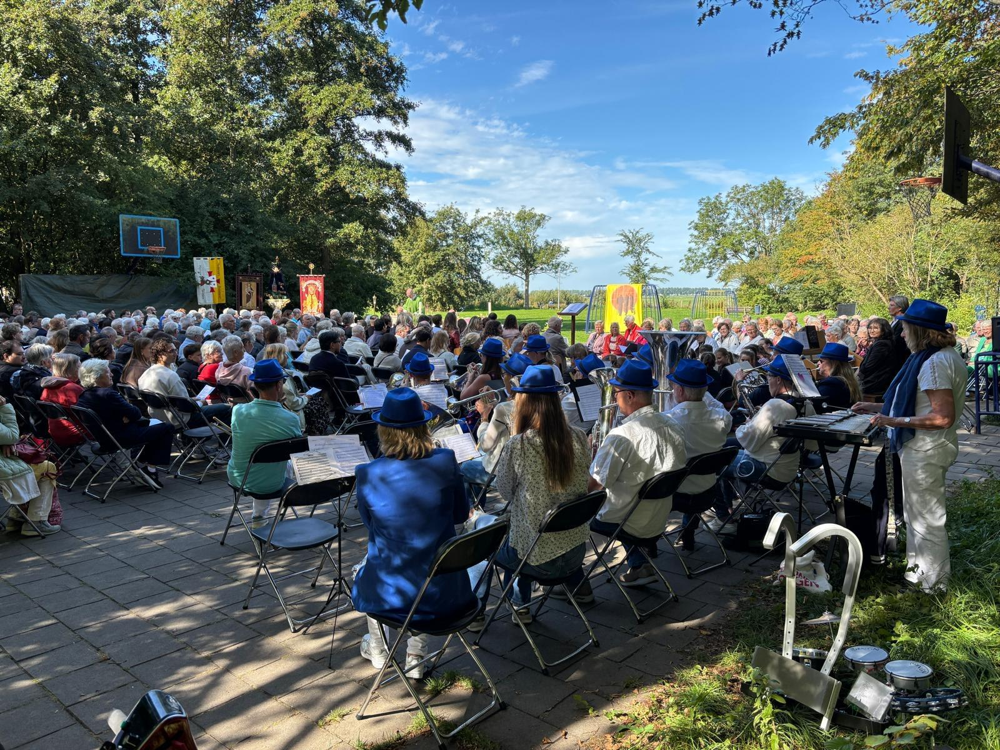
Voor degenen die me niet helemaal kennen zal ik me eerst maar even een beetje voorstellen. Ik ben René, en ik help Jan regelmatig met het oude ijzer en ik rij meestal met de kermisoptochten de steelband rond. Ik ben in 2008 in De Kwakel komen wonen, en ik werd al vrij snel door Piet Kas aangesproken. Hij haalde mij over om met de braderie te helpen en later ook de vuurwerkgroep. Via Martin Weij kende ik Jan ook, maar wist helemaal niet dat dat een broer van Piet was, en ook niet dat hij ook bij Tavenu speelde. Tot ik een keer een avondje mee was naar de repetitie van de steelband. Toen vielen de stukjes op hun plek. En bij de steelband was het meteen gezellig, je wordt vrij makkelijk opgenomen in de groep. En al snel zat ik met de kermis achter het stuur van de legerjeep van Bart.
Door omstandigheden kon ik vorig jaar niet, maar dit jaar wilde ik weer graag meedoen. Dus zodoende was ik om half 12 op zondagochtend present bij Vlasman, waar de steelband kar al klaar stond. Dit jaar mochten we het busje van Barts broer Mark gebruiken, dus die ging ik met Jan samen ophalen. Ondertussen werd de kar opgebouwd, ook onder het genot van een bakkie koffie met een koekje, en al vrij snel konden we naar de kinderen rijden. De start ging even mis, busje stond op de handrem en we stonden inene met een schok stil, en de steelband lag bijna op z’n gat.
Maar nadat we voor het dorpshuis stonden mochten we al snel een stukje verder rijden en werden de kinderen er achter geplaatst per categorie. En toen beginnen natuurlijk. Rustig rijden en af en toe even wachten tot alles weer aangesloten was. Rondje door het Zwarte Dorp en terug naar het dorp waar we pauze hadden. Ik reed verder over de Drechtdijk om bij Cresco te keren.
Na de pauze de Kuil in en naar de kermis toe. Daarvandaan meteen door naar Vlasman en de boel inklappen, een biertje na afloop en ons verheugen op de grote optocht op dinsdag. Wat mij betreft mag de route van de kinderoptocht wel een beetje variëren, het zou ook leuk zijn om in de Kuil eens door andere straten te trekken. Het was wel weer een leuke optocht, veel deelnemertjes en door het mooie weer ook goed druk langs de kant.
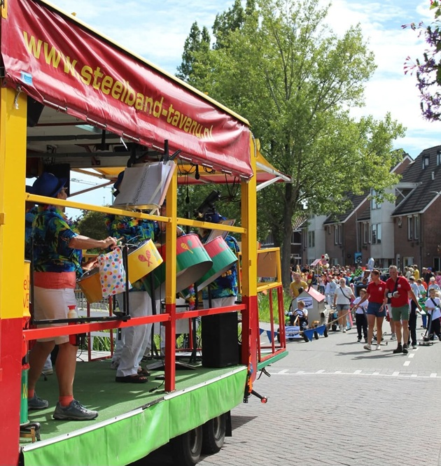
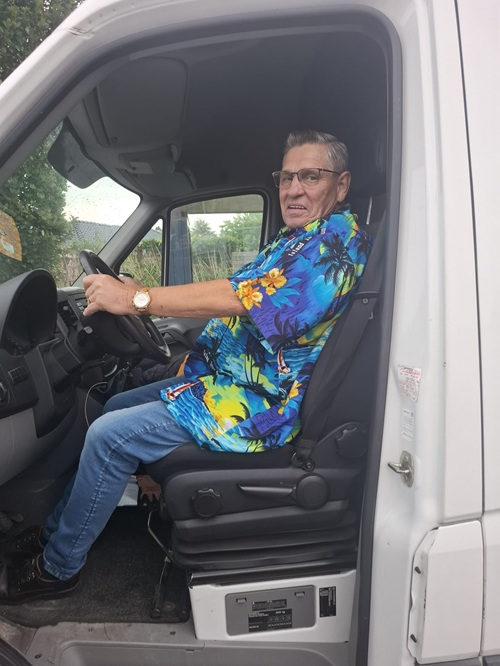
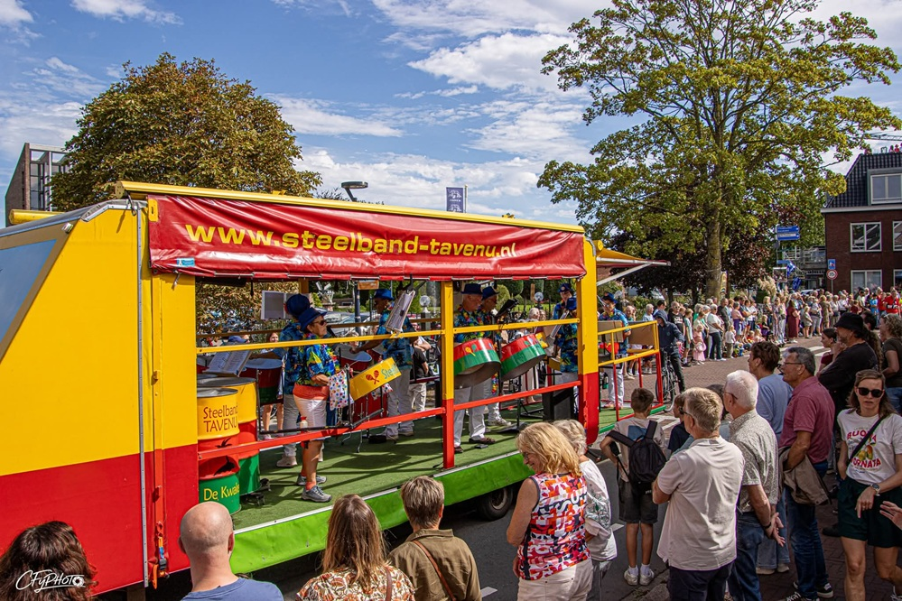
Dinsdagochtend 8 september ging de wekker al vroeg af. En dat in m'n vakantie! Maar wel voor een goed doel: de Kwakelse kermisoptocht. Omdat we met de steelband altijd vooraan meerijden, moeten we wel zorgen dat we er als eerste zijn, want als er al karren op het Kwakelse Pad staan, kunnen wij er niet meer langs. Dus het was de bedoeling om om kwart voor zeven bij Vlasman te zijn, om daar de laatste dingen in de kar te zetten, de klep alvast te laten zakken en dus als de sodemieter voor de andere karren uit naar de Ringdijk te rijden. Dat lukte prima, we hadden achteraf zelfs ietsjes later kunnen gaan. Martin kwam ook nog even kijken, en kwam dat even goed uit dat Koos nog een trommelset in zijn auto had staan, kon Martin meteen meedoen. Langs de Ringdijk de kar verder opgebouwd en versierd en daarna met een bakje koffie (??) gewacht tot de optocht van start ging.
Rond 9 uur moesten we gaan rijden van het feestcomité. Voorop reed een soort van Amerikaanse politiewagen die de toeschouwers erop attendeerde dat de stoet er aan kwam. Onze chauffeur René had er ook zin in, want we reden geregeld moederziel alleen, met de eerste kar honderden meters achter ons. Dus zo nu en dan maar even schreeuwen dat ie moest stoppen.
Op de Vuurlijn is het nooit zo heel druk, maar kunnen we wel altijd eventjes inkomen. Aan het einde waar we de Watsonweg opdraaien staat altijd wel veel publiek, dus daar even heel goed proberen te spelen. Maar we moeten daar ook altijd doorrijden, geen idee waarom, de weg is toch afgesloten. Op de Boterdijk staan de laatste jaren steeds meer mensen langs de kant te kijken, onder partytenten met veel genodigden en hapjes en drankjes, erg leuk! Dan op het dorp aangekomen staat het altijd bommetje vol, dus ook daar even goed voor de dag komen. Voor we de Kuil dan ingaan moeten we even wachten tot de boel een beetje aangesloten is. Erg leuk dat de kinderen van de Zon altijd langs de kant staan. Halverwege de Kuil stappen de meeste deelnemers van de karren af, dus het laatste stukje door de Kuil is altijd een beetje afraffelen, er staat toch vrijwel niemand, dus voor ons de hoogste tijd voor een plaspauze. En daarna de optocht bekijken, want we kunnen pas weer verder als alle karren gepasseerd zijn.
Na zo'n 2 uur kunnen we dan eindelijk weer verder. Helaas is het inmiddels gaan regenen, maar uiteraard bederft dat de sfeer totaal niet. Maar jammer is het wel natuurlijk. Er zouden nog 2 meiden eventjes met ons mee doen, maar dat is er uiteindelijk maar eentje geworden, de andere kon niet zo snel van de kar afkomen (die liep in de optocht mee als schaap). Met een workshop vorig jaar waren we op het idee gekomen om de meiden een paar nummertjes te laten spelen op onze kar tijdens de optocht, ook ter promotie van de workshop. Ze waren wel de week voor de optocht nog even op de repetitie langs geweest om te oefenen.
Om 2 uur stonden wij in de Ruilverkaveling en zat voor ons de optocht er op. Instrumenten inpakken, kar inklappen, en daarna in groepjes de karren en instrumenten wegbrengen naar Kudelstaart en Nieuwveen. Om 3 uur was dat allemaal gedaan, en gingen we voor de afterparty naar Conny. Daar gezellig geborreld en gegeten, en toen dat allemaal nog niet op was ging iedereen weer huiswaarts en zat de kermis er voor dit jaar weer op.
Nog even een groot bedankje voor iedereen die deze dag mede mogelijk heeft gemaakt voor ons: Mark Burggraaf voor het lenen van de bus, René voor het rijden, Martin voor het meedoen en Theo voor de aanwezigheid. En Conny voor alle lekkere hapjes.
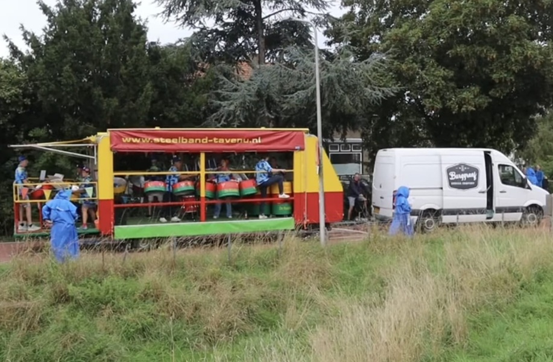
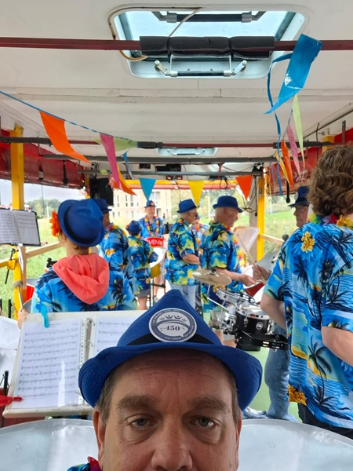
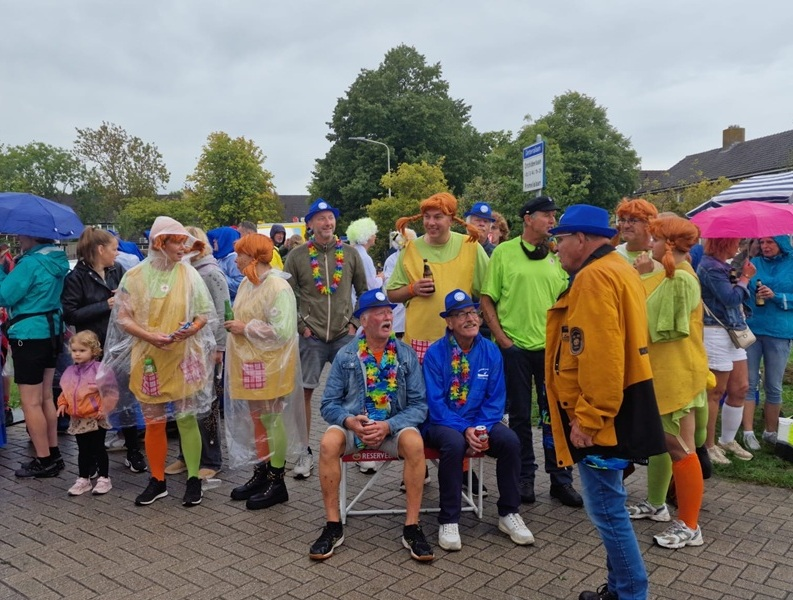
Elk jaar zijn er wel 1 of meerdere muzikanten die al behoorlijke tijd lid zijn van Tavenu, en daarom in het zonnetje gezet worden. Ook dit jaar zijn er 4 jubilarissen.
De eerste is Rien, en niet aan hem te zien, maar al liefst 50 jaar lid! Omdat wij nog niet zó lang meelopen bij Tavenu weten we het niet 100% zeker, maar volgens ons heeft hij altijd trombone gespeeld. Op de gezelligheidsdag werd Rien in het zonnetje gezet, in het bijzijn van zijn familie. Een kleine delegatie “drumfanfare” kwam opmarcheren en speelden al zingend een oude mars voor hem. Leo hield een leuk woordje, en onze voorzitter speldde het bijhorende insigne van de FKM op.
Dan hebben we ook Remon, 40 jaar lid inmiddels al, en slagwerker in hart en nieren. Begonnen bij de drumband, later ook drumstel bij de fanfare erbij gedaan, van begin af aan de melodie bij de steelband, de laatste jaren ook weer drummer bij het orkest, en niet te vergeten oud-kampioen op het NK solistenconcours. Ook zijn familie was opgetrommeld op de gezelligheidsdag, en zo konden zij zien hoe ook Remon door Koos het FKM-insigne opgespeld kreeg.
De andere 2 jubilarissen zijn Gerard en Thea. Zij zijn beide 10 jaar lid. Omdat ze niet op de gezelligheidsdag waren, werden zij gehuldigd tijdens de repetitie van het orkest. Helaas was deze avond ook Gerard niet aanwezig, dus mocht Thea maar liefst 2 speldjes mee naar huis nemen! Zo zie je maar, je familie een beetje opstoken levert zo maar 2 nieuwe leden op, althans, 10 jaar geleden dan. En we zien ze graag over 15 jaar nog een speldje voor 25-jarig lidmaatschap krijgen natuurlijk! Want de saxofoon en trombone blijven echt nog wel nodig bij Tavenu.
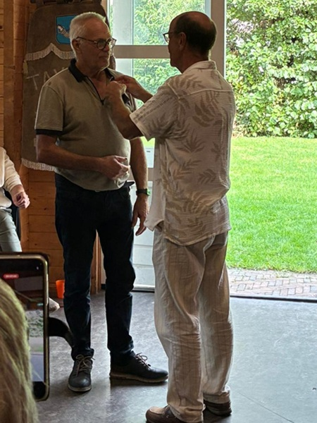
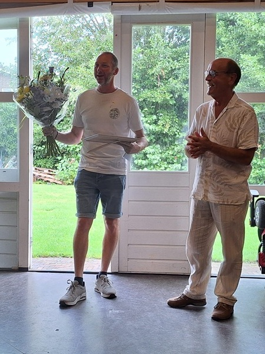
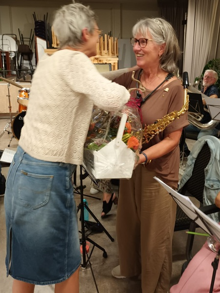
Mijn moeder en ik waren vandaag uitgenodigd op de 75e verjaardag van onze buurman. Tijdens het binnendruppelen van de visite werden wij verrast door een aantal leden van steelband Tavenu! Zij schoven bij ons aan en vanaf de eerste minuut was het ontzettend gezellig en voelde het alsof we er helemaal bij hoorden. Allerlei onderwerpen kwamen voorbij; B&B vol liefde, de Grannies van Amsterdam, salsa, maar ook huis-, tuin- en keukentips bij bijvoorbeeld harde geluiden dempen door breekbrood in je oren te stoppen hahaha.
Ze hebben ook de hele middag erg hun best gedaan om mij over te halen ook bij de band te komen, want er is een vacature! Voor nu hou ik het op de woensdagavond nog even bij Zumba, maar ik heb afgesproken om een keer te komen kijken tijdens de oefenavond op woensdag in Kudelstaart.
De tijd vloog voorbij tijdens de lunch en tussen het kletsen door. Al gauw mochten ze laten zien wat ze in huis hadden voor buurman Theo. Onder andere 'La Bamba' werd gespeeld en natuurlijk 'Lang zal hij leven' want daar hopen we natuurlijk allemaal op!
Het enthousiasme en de gezelligheid straalt tijdens het spelen echt van ze af. Ze leken zelfs meer familie dan 'gewoon' een groepje mensen wat muziek maakt. Wat een ontzettend lieve, vrolijke en gezellige mensen. Ik kan niet wachten jullie weer te zien en te horen tijdens de Sinterklaasoptocht in Amstelveen!
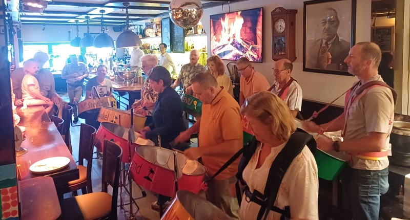
Jullie weten dat ik graag fotografeer. Tijdens het Open Podium en het Midzomeravondfestival maak ik een fotoserie, omdat te gebruiken in ons Tavenieuwsje. Dat is één kant van het fotograferen, een andere kant is het fotograferen van de natuur en dan in het bijzonder insecten.
Ik gebruik hier graag een macrolens voor, soms ook mijn verschillende telelenzen. In het voorjaar en zomer ga ik graag bij ons thuis op tuinsafari. Gewoon in je eigen tuin rond kijken en de insecten op de gevoelige plaat vastleggen. Voor deze hobby heb je engelengeduld nodig. Ik kan hier uren zoet mee zijn.
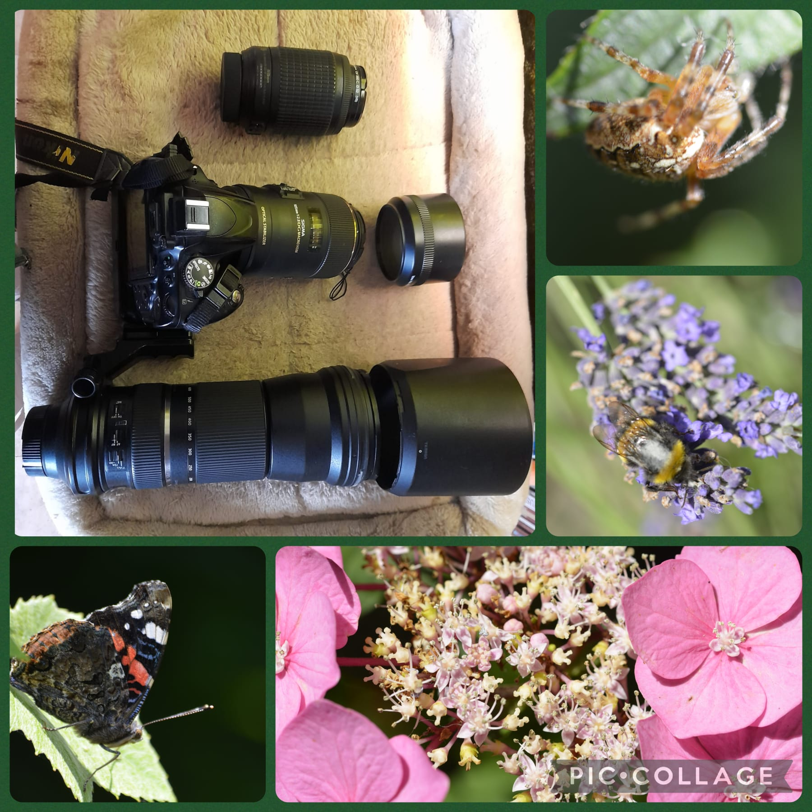
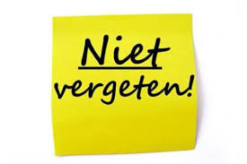
10 oktober oud ijzer
20 december kerstconcert